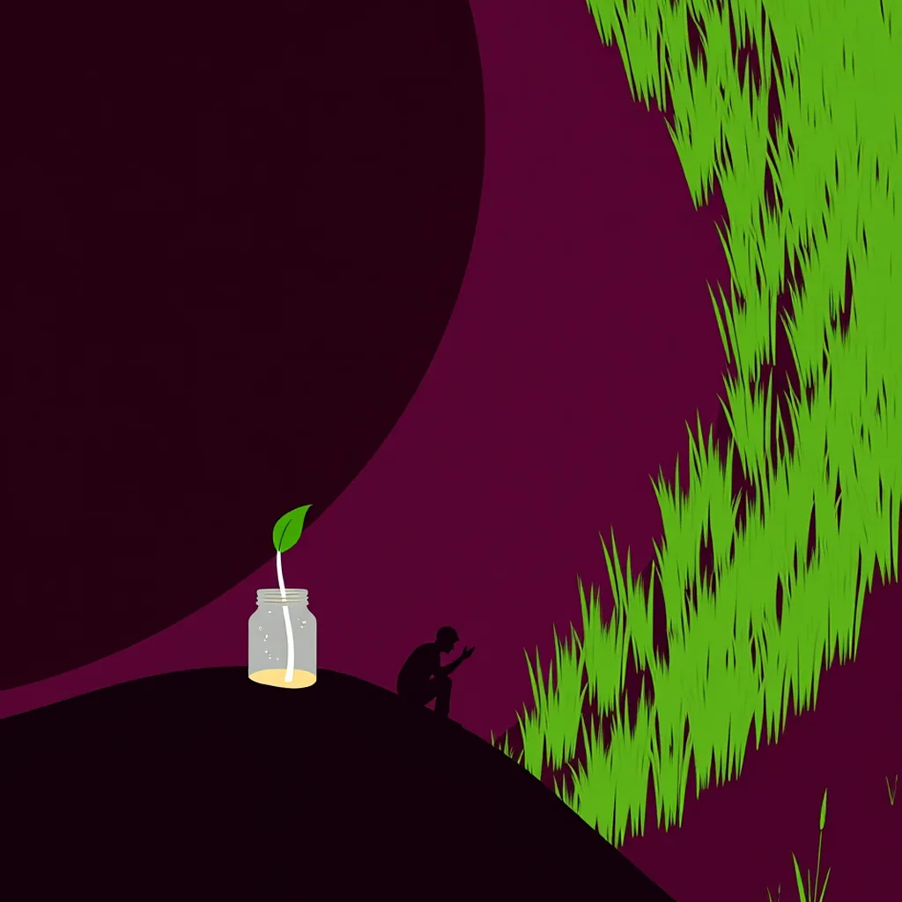

First Light ·
a bean sprout pushing up through the soil in a jar, a whole hillside of new green pushing up through the black of last year's burn
The plastic rim holds water now, clear and still from the storm last night. Inside, one white stalk finds purchase against glass, its stem thickening as it forces air into a dark throat of wet earth, curling leaves that unspool like wire catching on the jar's edge. It pushes hard; the soil crumbles around a single root tip. A sapling splits the concrete crack where water pooled yesterday, wood bending only enough to let green press outward again. Then the view swings wide to a burn scar swallowing the valley floor. Smoke has lifted into the white morning light over blackened pine needles. From the ash bed, a forest of straight young trunks rises in a single breath, a thousand stems driving up through the cooled ground, filling every inch of sight. The air hums with the sound of breaking earth and snapping bark. Back to the bench, the jar sits heavy on wood grain warmed by sun. One water droplet rests on the rim where the stalk just pierced the surface, leaving a wet ring exactly where the small life broke through yesterday's shadow.
How this piece was made
- 01Poem written byQwen3.5 9B recorded
Local model on one RTX 3070 Ti. It also critiques its own drafts and rewrites up to five times.
- 02Image prompt written byQwen3 8B from pipeline history
Local model. It reads the poem and writes the picture brief.
- 03Image rendered byFLUX.1 [schnell] from pipeline history
Local diffusion model on the same GPU. Several candidates per poem.
- 04Image chosen byClaude Fable 5.1 from pipeline history
Claude, running as the corporation's blind art-critic. It scores every candidate and never writes a prompt.
- Poem drafts
- 3 of 5
- Poem self-score
- 7/10
- Image candidates
- 4
- Judge’s score
- 4/10
- Selection
- Highest-scoring on-subject candidate (did not clear the judge’s bar outright)